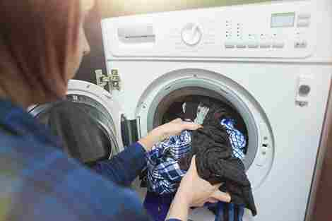
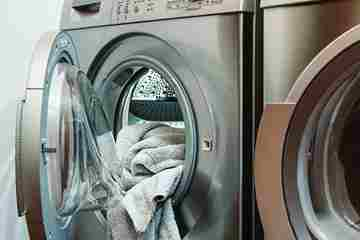

-

Cuci + Setrika
( Reguler )Pakaian akan dicuci dengan bersih memakai deterjen berkualitas, kemudian dikeringkan dan disetrika rapi.
Rp. 7.000/Kg
Pesan -
Setrika
( Reguler )Layanan ini hanya fokus pada penyetrikaan. Pakaian yang sudah dicuci dari rumah akan disetrika hingga rapi.
Rp. 6.000/Kg
Pesan -

Cuci Lipat
( Reguler )Pakaian akan dicuci dan dilipat rapi setelah pengeringan. tidak disetrika, namun sudah bersih dan siap untuk disimpan.
Rp. 6.000/Kg
Pesan -
Cuci + Setrika
( Express / 2 Hari )Pakaian akan sama dicuci dan setrika juga. Tetapi dengan harga sekian, anda hanya memakan waktu 2 Hari.
Rp. 10.000/Kg
Pesan -
Cuci + Setrika
( Express / 1 Hari )Pakaian akan sama dicuci dan setrika juga. Tetapi dengan harga sekian, anda hanya memakan waktu 1 Hari saja.
Rp. 12.000/Kg
Pesan